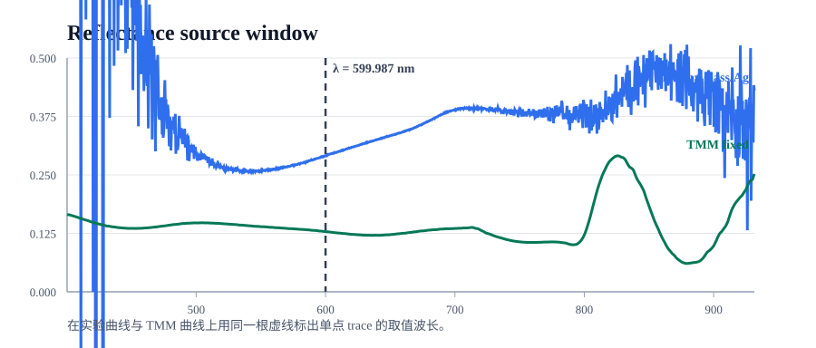
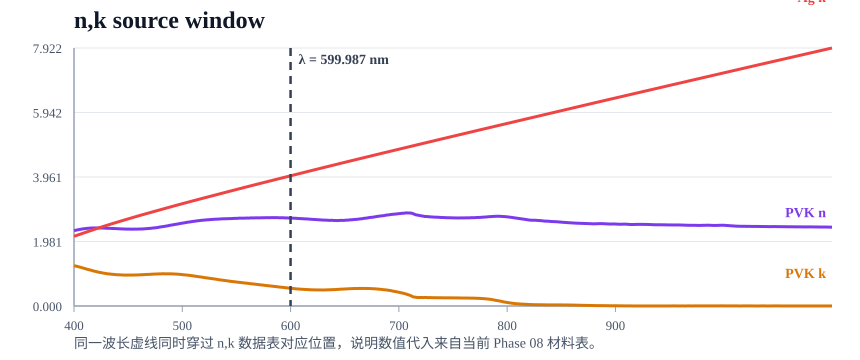

Phase 08 Technical Report
输入路径
| 项 | 路径 |
|---|---|
| trace values | data/processed/phase08/reference_comparison_trace/phase08_0429_trace_600nm_values.json |
| theory audit json | data/processed/phase08/reference_comparison/phase08_0429_theory_tmm_manual_audit_pvk_x01.json |
| trace markdown | results/report/phase08_reference_comparison_trace/phase08_0429_trace_600nm.md |
| theory audit markdown | results/report/phase08_reference_comparison_trace/phase08_0429_theory_tmm_manual_audit_pvk_x01.md |
| manifest | data/processed/phase08/reference_comparison/phase08_0429_dual_reference_manifest_pvk_x01.json |
| reflectance figure | results/figures/phase08/reference_comparison/phase08_0429_dual_reference_reflectance_exp_vs_tmm_pvk_x01.png |
| residual figure | results/figures/phase08/reference_comparison/phase08_0429_residual_pvk_x01.png |
TMM theoretical reflectance manual audit
采用 Steven Byrnes / python tmm convention：exp(-iωt)、前进方向 +z、法向入射下展示 s polarization。当前入射半无限介质非吸收，因此可写 R = |r|²。
| quantity | value |
|---|---|
| lambda_used_nm | 599.987374448794 |
| N_glass | 1.515000000000 + 0.000000000000i |
| N_pvk | 2.699975479567 + 0.545587752541i |
| N_ag | 0.049204777984 + 3.997948794498i |
| d_pvk_nm | 700.000000000000 |
| d_ag_nm | 100.000000000000 |
Glass / PVK / Air coherent formula
r01 = (N0 - N1) / (N0 + N1)
r12 = (N1 - N2) / (N1 + N2)
delta = 2π N1 d1 / lambda
r_stack = (r01 + r12 * exp(2i * delta)) / (1 + r01 * r12 * exp(2i * delta))
R_stack = |r_stack|²
| quantity | value |
|---|---|
| r01 | -0.292980573691 + -0.091516817043i |
| r12 | 0.470959132411 + 0.078010846165i |
| delta | 19.792270453996 + 3.999451267759i |
| exp(2i delta) | -0.000103928695 + 0.000319345078i |
| r_stack_manual | -0.293041083220 + -0.091381594421i |
| R_stack_manual | 0.094223672254 |
| R_stack_tmm | 0.094223672254 |
| abs_diff | 2.776e-17 PASS |
Incoherent cascade audit
R_total = R01 + (T01 * T10 * P² * R_stack) / (1 - R10 * P² * R_stack)
Current simplification:
R_total = R_front + ((1 - R_front)² * R_stack) / (1 - R_front * R_stack)
| quantity | value |
|---|---|
| R_front | 0.041931314696 |
| T01 | 0.958068685304 |
| T10 | 0.958068685304 |
| P | 1.000000000000 |
| R_total_general_formula | 0.128761870208 |
| R_total_simplified_formula | 0.128761870208 |
| R_TMM_GlassPVK_Fixed_csv | 0.128761870208 |
| abs_diff | 0.000e+00 PASS |
glass/Ag and Ag mirror audit
| case | manual | tmm | csv | abs_diff | result |
|---|---|---|---|---|---|
| glass/Ag stack | 0.983481888037 | 0.983481888037 | — | 0.000e+00 | PASS |
| glass/Ag total | 0.983493821013 | — | 0.983493821013 | 1.110e-16 | PASS |
| Ag mirror | 0.988236844080 | 0.988236844080 | 0.988236844080 | 3.331e-16 | PASS |
Ag mirror caveat: This only audits consistency with the current model; whether the physical Ag mirror is equivalent to Air / 100 nm Ag / Air still needs sample-level confirmation.
Value source locator


Key figures


Audit boundary
- 本审计证明当前手写公式、tmm.coh_tmm() 与现有 CSV 在当前模型假设下自洽。
- 本审计不证明 nk 数据一定代表真实样品，也不证明显微实验一定等价于理想 specular reflectance。
- exp(-2i delta) 结果只作为 convention sanity check，不进入主物理逻辑。
Appendix excerpts
# Phase 08 Single-Wavelength Trace Report
## 0. 执行摘要
- 本报告审计目标波长为 `600.000 nm`，实际使用最近数据点 `599.987374448794 nm`，偏差 `-0.012625551206 nm`。
- 手写单层相干公式与 `coh_tmm` 一致，一致性阈值为 `1.0e-08`。
- 手写厚玻璃非相干级联与现有 CSV 一致。
- 该点实验反射率分别为 `glass/Ag = 0.290941137959`、`Ag mirror = 0.263950280877`，而 `R_TMM_GlassPVK_Fixed = 0.128761870208`。
- 当前结论：公式实现与输出 CSV 在该点自洽，但实验与理论仍存在显著差异；下一步应继续审查 `n,k` 适用性、实验参比链路、显微收光与散射贡献。
## 0.1 审计状态表
| 检查项 | 状态 | 说明 |
| --- | --- | --- |
| target wavelength matched to nearest data point | PASS | target=600.000 nm, used=599.987374 nm, Δ=-0.012626 nm |
| Ag first frame excluded | PASS | Ag 第 1 帧显式剔除；若无 Ag trace 则不检查。 |
| Ag frames reduced by mean | PASS | Ag 用 frame 2–100 求 mean；BK 用 frame 1–100 求 mean。 |
| manual coherent formula vs coh_tmm | PASS | 一致性阈值 abs_diff <= 1.0e-08 |
| manual incoherent cascade vs CSV | PASS | 一致性阈值 abs_diff <= 1.0e-08 |
| experimental reflectance manual vs CSV | PASS | 手算实验反射率与输出 CSV 对比。 |
| PVK n,k suitability | WARNING | 当前只审计 output_tag=pvk_x01 对应 nk 来源，不能证明该 nk 全谱适用。 |
| specular-only TMM vs microscope measurement equivalence | WARNING | 公式自洽不等于显微镜实测必然等于理想 specular reflectance。 |
## 1. 输入数据与版本
| 角色 | 路径 |
| --- | --- |
| dual manifest | `data/processed/phase08/reference_comparison/phase08_0429_dual_reference_manifest_pvk_x01.json` |
| calibrated reflectance | `data/processed/phase08/reference_comparison/phase08_0429_dual_reference_calibrated_reflectance_pvk_x01.csv` |
| theory csv | `data/processed/phase08/reference_comparison/phase08_0429_dual_reference_tmm_theory_curves_pvk_x01.csv` |
| nk csv | `resources/aligned_full_stack_nk_phase08_x01.csv` |
| sample csv | `test_data/0429/glass-PVK-withoutfliter-20ms 2026 四月 29 14_45_45.csv` |
| reference csv | `test_data/0429/glass-Ag-withoutfliter-20ms 2026 四月 29 14_42_25.csv` |
| ag corrected csv | `data/processed/phase08/reference_comparison/phase08_0429_ag_mirror_background_corrected_pvk_x01.csv` |
| ag frame qc csv | `data/processed/phase08/reference_comparison/phase08_0429_ag_mirror_frame_qc_pvk_x01.csv` |
| source output tag | `pvk_x01` |
## 2. 目标波长与实际使用波长
| quantity | value |
| --- | --- |
| target_wavelength_nm | 600.000000000000 |
| lambda_used_nm | 599.987374448794 |
| delta
# Phase 08 TMM Theoretical Reflectance Manual Audit
## 1. Convention
- 时间因子：`exp(-iωt)`
- 前进方向：`+z`
- 统一使用 `s polarization` 展示
- 当前入射半无限介质非吸收，因此 `R = |r|²`
- 目标波长使用 trace 最近点：`lambda_used_nm = 599.987374448794`
## 2. Glass / PVK / Air coherent stack
$$r_{01}=\frac{N_0-N_1}{N_0+N_1},\qquad r_{12}=\frac{N_1-N_2}{N_1+N_2}$$
$$\delta = \frac{2\pi N_1 d_1}{\lambda}$$
$$r_{\mathrm{stack}} = \frac{r_{01}+r_{12}e^{2 i \delta}}{1+r_{01}r_{12}e^{2 i \delta}},\qquad R_{\mathrm{stack}}=|r_{\mathrm{stack}}|^2$$
| quantity | value |
| --- | --- |
| N_glass | 1.515000000000 + 0.000000000000i |
| N_pvk | 2.699975479567 + 0.545587752541i |
| N_air | 1.000000000000 + 0.000000000000i |
| d_pvk_nm | 700.000000000000 |
| r01 | -0.292980573691 + -0.091516817043i |
| r12 | 0.470959132411 + 0.078010846165i |
| delta | 19.792270453996 + 3.999451267759i |
| exp(2i delta) | -0.000103928695 + 0.000319345078i |
| r_stack_manual | -0.293041083220 + -0.091381594421i |
| R_stack_manual | 0.094223672254 |
| R_stack_tmm | 0.094223672254 |
| abs_diff | 2.776e-17 |
| PASS | True |
## 3. Thick-glass incoherent cascade
$$R_{\mathrm{total}} = R_{01} + \frac{T_{01}T_{10}P^2R_{\mathrm{stack}}}{1-R_{10}P^2R_{\mathrm{stack}}}$$
当前简化条件：`Glass k≈0`，`P≈1`，`R01=R10=R_front`，`T01 T10=(1-R_front)^2`
$$R_{\mathrm{total}} = R_{\mathrm{front}} + \frac{(1-R_{\mathrm{front}})^2 R_{\mathrm{stack}}}{1-R_{\mathrm{front}}R_{\mathrm{stack}}}$$
| quantity | value |
| --- | --- |
| R_front | 0.041931314696 |
| R_stack | 0.094223672254 |
| T01 | 0.958068685304 |
| T10 | 0.958068685304 |
| P | 1.000000000000 |
| R_total_general_formula | 0.128761870208 |
| R_total_simplified_formula | 0.128761870208 |
| R_TMM_GlassPVK_Fixed_csv | 0.128761870208 |
| abs_diff | 0.000e+00 |
| PASS | True |
## 4. Reference theory audit
| case | manual | tmm | csv | abs_diff | PASS |
| --- | --- | --- | --- | --- | --- |
| glass/Ag stack | 0.983481888037 | 0.983481888037 | — | 0.000e+00 | True |
| glass/Ag total | 0.983493821013 | — | 0.983493821013 | 1.110e-16 | True |
| Ag mirror | 0.988236844080 | 0.988236844080 | 0.988236844080 | 3.331e-16 | True |
## 5. Convention sanity check
下表仅用于说明 `exp(-2i delta)` 没被当成主物理逻辑。
| quantity | value |